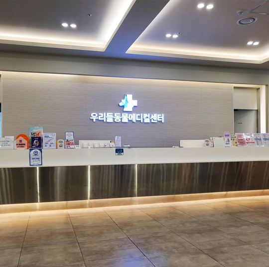
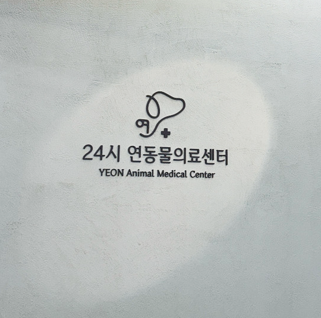
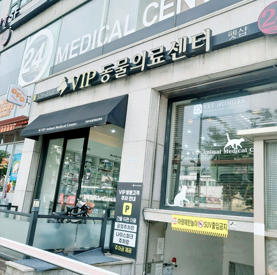
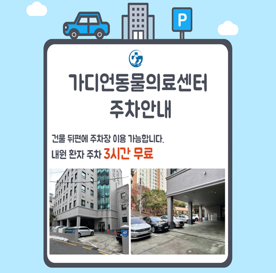
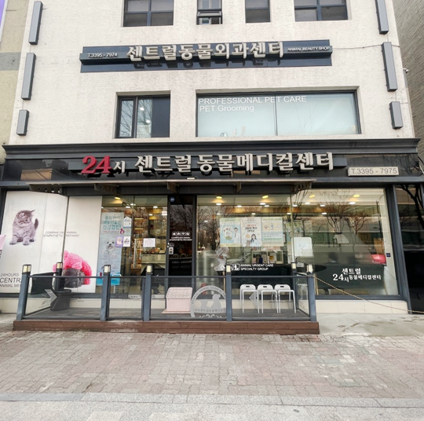

병원이름: 우리들동물메디컬센터
주소: 서울특별시 양천구 신월로 355
영업시간: 24시간 영업
전화번호: 02-2642-7588
소개글: 국내동물병원 최초 미국 GE사 MRI, 160채널의 CT 최신 새장비 도입운영 , 20명수의사를 포함한 40여명의 전문진료스텝,
각과별
대학병원 출신 전문의진료,종양,심장병,고난이도수술,2차진료전문
병원이름: 우리들동물메디컬센터
주소: 서울특별시 양천구 신월로 355
영업시간: 24시간 영업
전화번호: 02-2642-7588
소개글: 국내동물병원 최초 미국 GE사 MRI, 160채널의 CT 최신 새장비 도입운영 , 20명수의사를 포함한 40여명의 전문진료스텝,
각과별
대학병원 출신 전문의진료,종양,심장병,고난이도수술,2차진료전문

병원이름: 연동물의료센터
주소: 서울 강서구 화곡동 1060-30
영업시간: 24시간 영업
전화번호: 0507-1326-7553
소개글: - 365일 연중무휴 / 24시 응급진료 상시 가능.
- 100평 규모의 병원으로 쾌적한 대기공간.
- 수의외과 전문의 수술집도. (CTWO, TPLO, 디스크, 종양수술 등 고난이도 수술 전문)
- 응급&정형&일반 외과. 수술실과 수술 준비실 별도 구분으로 외과수술 최적화.

병원이름: VIP동물의료센터 서초점
주소: 서울 서초구 방배동 442-3
영업시간: 24시간 영업
전화번호: 02-525-3102
소개글: VIP 동물의료센터 서초점은 최신 장비 및 특화 진료 시스템이 구축 되어 있어 내과, 외과, 안과, 치과 등 분과별 전문 의료진이
협진하여 ONE STOP CARE 서비스를 제공하는 24시 동물의료센터 입니다. 간단한 건강검진부터 복잡한 특수진료까지 한 곳에서!

병원이름: 가디언동물의료센터
주소: 서울 서초구 방배동 907-4
영업시간: 10:00 ~ 17:00
전화번호: 0507-1435-8349
소개글:
<가디언동물의료센터>는 보호자분들의 성화와 믿음에 보답하기 위해, 대학병원에서 근무 경험을 쌓은 수의학 박사 출신 의료진들이 최신의 의학기술과 대형병원급의 의료장비를
갖추고있습니다.

병원이름: 24시센트럴동물메디컬센터
주소: 서울특별시 성동구 고산자로 207
영업시간: 24시간 영업
전화번호: 02-3395-7975
소개글:
20년 이상 경력 의료진의 꼼꼼함으로 종합병원 수준의 마취시스템과 수술 전담 동물보건사와 마취의 상주하여 대표원장님이 직접 수술합니다.
강아지디스크 / 슬개골탈구 / 항암치료 / 심장내과 / 뇌질환 등과 같은 심화 진료와 재활운동센터와 재활한방센터 운영하고 있습니다.